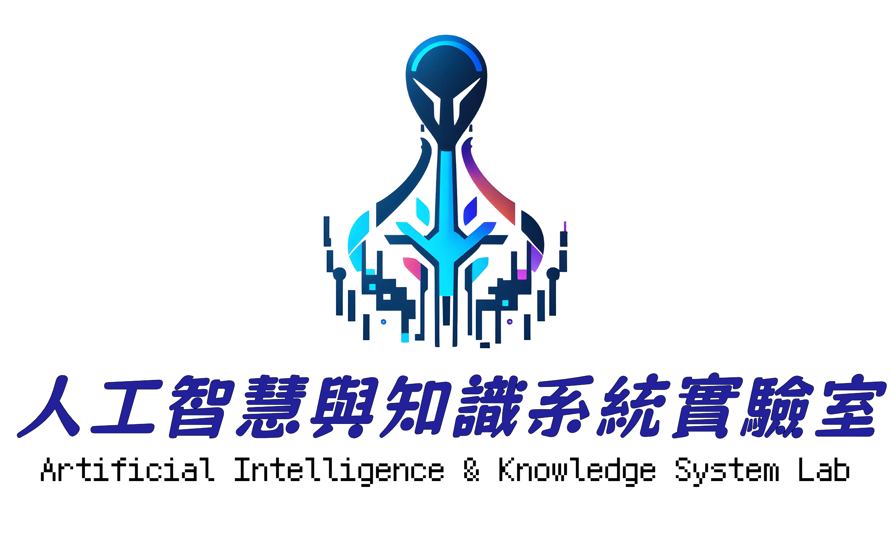

人工智慧與知識系統實驗室
Artificial Intelligence & Knowledge System Lab
Welcome to CoolKnowledge.ai
The CoolKnowledge.ai Platform is developed and maintained by the Lab for AI and Knowledge Systems at the Department of Computer Science and Information Engineering, National Central University, Taiwan.